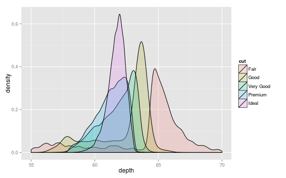

R is a free software tool designed to facilitate interactive data analysis and visualization. It has recently become the most popular platform for data analysis in the biosciences and data science community, replacing commercial software packages like SPSS and SASS. Its name is a bit of a pun on its history: R is a derivative of the commercial S-Plus. It was originally developed by Ross Ihaka and Robert Gentlemen.
R is really two related things: a powerful programming language designed for interactive data analysis and a huge community of researcher/programmers who have implemented analysis and visualization algorithms in R. To explore general statistical packages available for R see CRAN; for bioinformatics and computational biology packages see BioConductor.
R is free software, in that it is free for anyone to install and use. At W&L we are fortunate enough to have the resources to pay expensive software licensing fees for commercial data analysis software like SPSS and Matlab, but this may not be the case for our collaborators or other researchers who would like to reproduce our work. There's a compelling argument to be made that using paid-software in basic research runs counter to our obligation to make our published data publicly available and our work easily reproducible.
The design of R and of R packages makes it nearly impossible to hide or obfuscate source code. As a language, R was designed from the ground up to be an open source software ecosystem. As a result, the sources for all of base R and all packages on CRAN and BioConductor are open to scrutiny by programmers, statisticians and researchers. Even good programmers on major software projects make mistakes, like the folks who make Excel. In the closed source world, bugs are only caught when users pin down odd behaviors in programs. When software is open source, many eyes can directly examine the implementation of new algorithms, dramatically decreasing the likelihood that errors will make it into released software (thereby decreasing the likelihood that you will publish erroneous results). The huge advantages that come with crowd sourcing software validaton is probably why open source software runs the internet.
Because the R language was designed with statistics in mind, it offers many language features that make it easy to implement new data analysis algorithms. Because of this, R has become the de facto platform for methodological research in statistics and data science. It is almost always the first choice for implementing and experimenting with new analysis methods. This meanss it is quite likely that a package is available for R which offers the latest and greatest approach for your research field.
There are other open source high-level scripting languages that are quite popular in research science, like Python and Perl. These programming languages offer features which are very similar to R. However, the recent rise in popularity of R among the bioscience and data science communities has likely been driven by a few simple usability features that are unique to the R environment. In particular, the language has been designed from the ground up to make it easy to interactively explore large datasets and easily produce publication-quality visualizations.
If you're interested in a deep analysis of the design of the R language, including formal semantics, this recent paper offers some interesting insights.
There's no getting around the fact that the learning curve for R is very steep, especially if you've never programmed before or worked at a command line. The core R software offers no user interface in the traditional desktop sense. There are no menus or buttons to click like there are Excel. Over the 20 year history of the R language there have been several efforts to create a front end interfaces for R. Interestingly, these efforts have never really caught on and have been actively discouraged by the original authors of the language. The argument against this approach is that putting a point-and-click interface on the front of R is like droping a jet engine into a Yugo. The language developers argue that it is impossible to design an Excel or Minitab style interface that would let a user access the full power of the R language or the scope of its packages, and doing so runs the risk of discouraging users from really exploring the language.
Nonetheless, when you or your students used to a work flow that's menu and button driven it is hard to know where to start with a tool like R. Our hope is to try to help to ease the pain of adopting R through our club meetings and tutorials that we slowly deveop on this website!